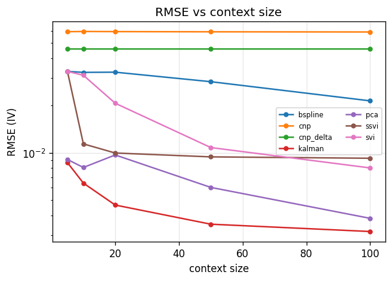
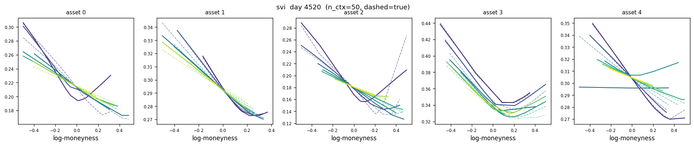
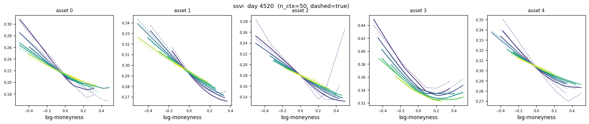
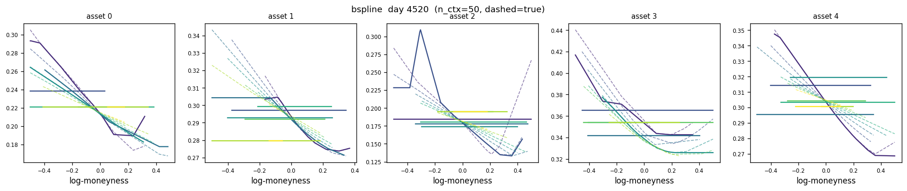
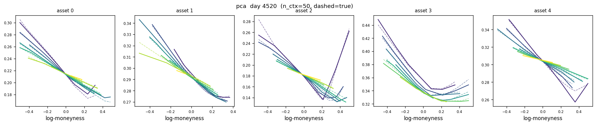
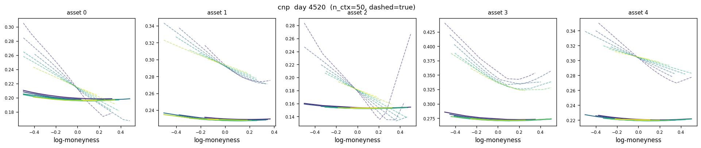
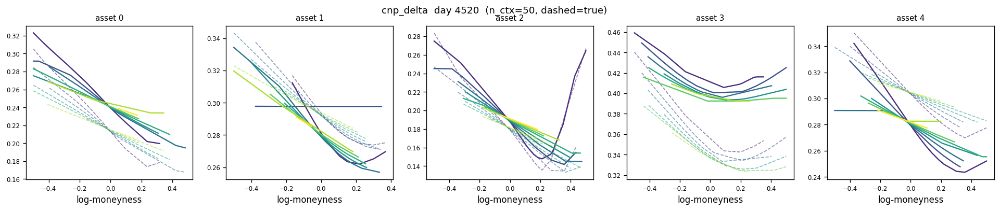

independent evaluation · 7 models · 40 eval days · 5 assets
| model | split | rmse | rmse_liquid | rmse_illiquid | mae | butterfly_pct | calendar_pct |
|---|---|---|---|---|---|---|---|
| bspline | ctx_10 | 0.03258 | 0.02384 | 0.03460 | 0.02424 | 0.00000 | 0.07812 |
| bspline | ctx_100 | 0.02147 | 0.01168 | 0.02345 | 0.00883 | 0.36046 | 4.65283 |
| bspline | ctx_20 | 0.03267 | 0.02605 | 0.03427 | 0.02440 | 0.00000 | 0.15165 |
| bspline | ctx_5 | 0.03306 | 0.02432 | 0.03508 | 0.02462 | 0.00000 | 0.00000 |
| bspline | ctx_50 | 0.02842 | 0.02056 | 0.03023 | 0.01740 | 0.29601 | 4.39161 |
| bspline | extrapolation | 0.03031 | 0.03031 | 0.01903 | 0.37825 | 0.18675 | |
| cnp | ctx_10 | 0.05933 | 0.05563 | 0.06031 | 0.04862 | 0.00000 | 0.00000 |
| cnp | ctx_100 | 0.05891 | 0.05511 | 0.05991 | 0.04823 | 0.00000 | 0.00000 |
| cnp | ctx_20 | 0.05922 | 0.05548 | 0.06021 | 0.04848 | 0.00000 | 0.00000 |
| cnp | ctx_5 | 0.05914 | 0.05546 | 0.06011 | 0.04847 | 0.00000 | 0.00000 |
| cnp | ctx_50 | 0.05905 | 0.05532 | 0.06004 | 0.04833 | 0.00000 | 0.00000 |
| cnp | extrapolation | 0.06149 | 0.06149 | 0.05064 | 0.00000 | 0.00000 | |
| cnp_delta | ctx_10 | 0.04590 | 0.04613 | 0.04584 | 0.03358 | 0.43553 | 2.63406 |
| cnp_delta | ctx_100 | 0.04590 | 0.04613 | 0.04584 | 0.03358 | 0.43553 | 2.63406 |
| cnp_delta | ctx_20 | 0.04590 | 0.04613 | 0.04583 | 0.03358 | 0.43553 | 2.63406 |
| cnp_delta | ctx_5 | 0.04590 | 0.04613 | 0.04583 | 0.03357 | 0.43553 | 2.63406 |
| cnp_delta | ctx_50 | 0.04590 | 0.04613 | 0.04584 | 0.03358 | 0.43553 | 2.63406 |
| cnp_delta | extrapolation | 0.04584 | 0.04584 | 0.03331 | 0.60149 | 3.17069 | |
| kalman | ctx_10 | 0.00643 | 0.00487 | 0.00679 | 0.00423 | 0.07093 | 0.18509 |
| kalman | ctx_100 | 0.00316 | 0.00233 | 0.00335 | 0.00180 | 0.12861 | 0.29202 |
| kalman | ctx_20 | 0.00466 | 0.00337 | 0.00496 | 0.00291 | 0.07086 | 0.21959 |
| kalman | ctx_5 | 0.00868 | 0.00707 | 0.00908 | 0.00594 | 0.03870 | 0.13830 |
| kalman | ctx_50 | 0.00352 | 0.00256 | 0.00374 | 0.00204 | 0.10941 | 0.25945 |
| kalman | extrapolation | 0.00712 | 0.00712 | 0.00450 | 0.08196 | 0.61529 | |
| pca | ctx_10 | 0.00808 | 0.00257 | 0.00903 | 0.00244 | 0.10892 | 0.34297 |
| pca | ctx_100 | 0.00384 | 0.00206 | 0.00419 | 0.00166 | 0.16092 | 0.34273 |
| pca | ctx_20 | 0.00971 | 0.00210 | 0.01091 | 0.00232 | 0.11659 | 0.37258 |
| pca | ctx_5 | 0.00909 | 0.00377 | 0.01007 | 0.00335 | 0.11629 | 0.34920 |
| pca | ctx_50 | 0.00604 | 0.00207 | 0.00673 | 0.00185 | 0.10877 | 0.36335 |
| pca | extrapolation | 0.01126 | 0.01126 | 0.00361 | 0.15068 | 0.89638 | |
| ssvi | ctx_10 | 0.01142 | 0.00691 | 0.01238 | 0.00525 | 0.00000 | 0.10333 |
| ssvi | ctx_100 | 0.00925 | 0.00472 | 0.01015 | 0.00373 | 0.00000 | 0.06391 |
| ssvi | ctx_20 | 0.00999 | 0.00542 | 0.01092 | 0.00424 | 0.00000 | 0.07722 |
| ssvi | ctx_5 | 0.03306 | 0.02432 | 0.03508 | 0.02462 | 0.00000 | 0.00000 |
| ssvi | ctx_50 | 0.00944 | 0.00504 | 0.01033 | 0.00383 | 0.00000 | 0.07154 |
| ssvi | extrapolation | 0.01909 | 0.01909 | 0.01187 | 0.00000 | 0.11088 | |
| svi | ctx_10 | 0.03122 | 0.02220 | 0.03327 | 0.02306 | 0.00000 | 0.00000 |
| svi | ctx_100 | 0.00803 | 0.00785 | 0.00808 | 0.00299 | 0.03860 | 0.87401 |
| svi | ctx_20 | 0.02072 | 0.01474 | 0.02208 | 0.01231 | 0.03173 | 0.32857 |
| svi | ctx_5 | 0.03306 | 0.02432 | 0.03508 | 0.02462 | 0.00000 | 0.00000 |
| svi | ctx_50 | 0.01082 | 0.01035 | 0.01095 | 0.00426 | 0.00648 | 1.07103 |
| svi | extrapolation | 0.01884 | 0.01884 | 0.01155 | 0.00000 | 0.80082 |







